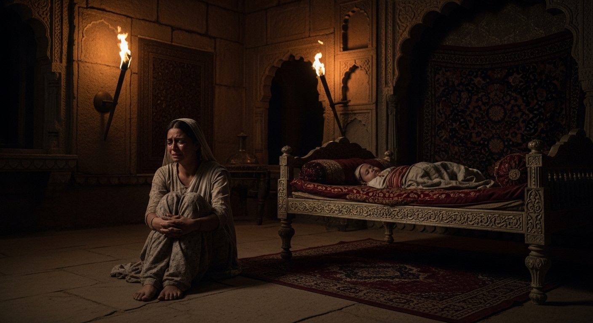
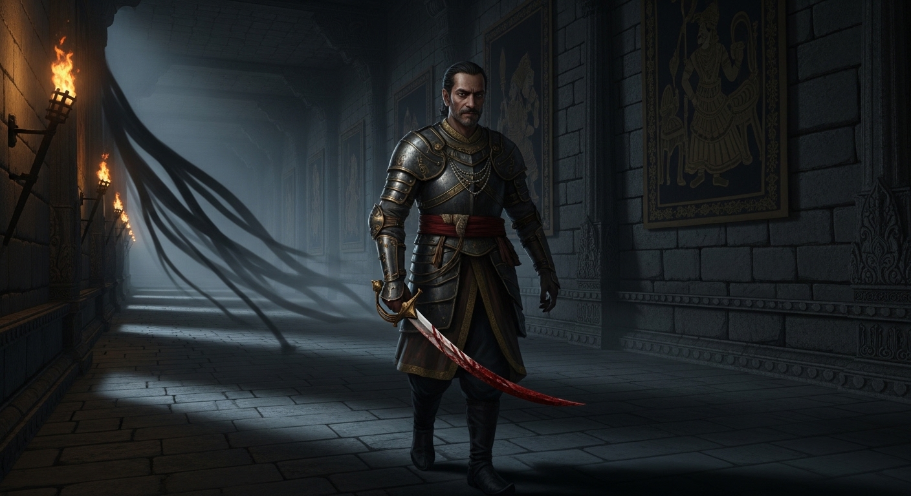
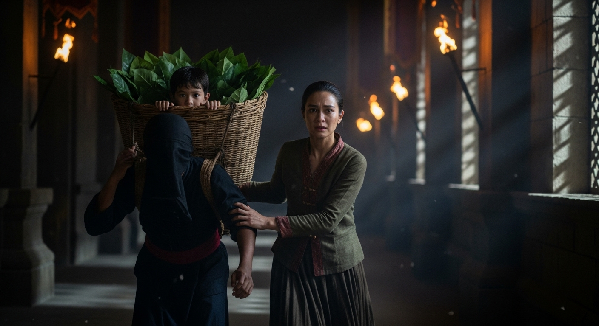

लेखक: डॉ. रामकुमार वर्मा
मूल विषय: असीम त्याग, देशभक्ति, राजपूती मर्यादा और कर्तव्यनिष्ठा।
पात्र परिचय:
चित्तौड़ के स्वर्गीय महाराणा सांगा का सबसे छोटा पुत्र, कुँवर उदयसिंह, अभी नाबालिग है। उसकी देखभाल पन्ना धाय करती है। राज्य की सत्ता अस्थाई रूप से बनबीर के हाथों में है। बनबीर बहुत लालची और क्रूर है; वह हमेशा के लिए मेवाड़ का राजा बनना चाहता है। इसके लिए उसे उदयसिंह को रास्ते से हटाना होगा। अपनी साज़िश को अंजाम देने के लिए बनबीर तुलजा भवानी के मंदिर में 'दीपदान' (नदी में दीप बहाने का उत्सव) का आयोजन करता है। उसका उद्देश्य है कि जब सारा महल उत्सव में व्यस्त हो, तब वह चुपचाप उदयसिंह की हत्या कर दे।

उदयसिंह एक बच्चा है, वह भी दीपदान उत्सव में जाना चाहता है, परंतु पन्ना धाय उसे रोक लेती है। पन्ना धाय को बनबीर की नीयत पर शक है। वह उदयसिंह को महल से बाहर नहीं जाने देती और उसे सुला देती है। इसी बीच, सोना (एक नर्तकी) और सामल (एक सेविका) पन्ना को बताती हैं कि बनबीर ने विक्रमादित्य (उदयसिंह के बड़े भाई) की हत्या कर दी है और अब वह नंगी तलवार लेकर उदयसिंह के महल की ओर आ रहा है। यह सुनकर पन्ना धाय समझ जाती है कि कुँवर की जान खतरे में है।
पन्ना धाय तुरंत एक साहसिक योजना बनाती है। महल के जूठे पत्तल उठाने वाला सेवक, कीरत बारी, पन्ना का बहुत वफादार है। पन्ना कीरत को आदेश देती है कि वह कुँवर उदयसिंह को अपनी पत्तलों वाली बड़ी टोकरी में छिपाकर चुपचाप महल से बाहर ले जाए और बेड़च नदी के पार श्मशान में उसका इंतज़ार करे। कीरत बारी अपनी जान पर खेलकर सोए हुए उदयसिंह को पत्तलों के नीचे छिपाता है और पहरेदारों को चकमा देकर महल से सुरक्षित निकाल लेता है।

बनबीर को धोखा देने के लिए, पन्ना धाय अपने सगे पुत्र 'चंदन' को उदयसिंह के कपड़े पहनाकर उदयसिंह की शय्या (बिस्तर) पर सुला देती है। कुछ ही देर में बनबीर खून से सनी तलवार लेकर कमरे में प्रवेश करता है। वह पन्ना को जागीर (दौलत) का लालच देकर उदयसिंह के बारे में पूछता है, लेकिन पन्ना उसे धिक्कारती है और मेवाड़ के गद्दार से लड़ने का प्रयास करती है। क्रोधित बनबीर बिस्तर पर सो रहे बच्चे (चंदन) को उदयसिंह समझकर पन्ना की आँखों के सामने ही उसे अपनी तलवार से काट डालता है। पन्ना धाय बिना एक भी आँसू बहाए, मेवाड़ के कुलदीपक (उदयसिंह) की रक्षा के लिए अपने स्वयं के कुलदीपक (चंदन) का बलिदान (दीपदान) कर देती है।
इस एकांकी का उद्देश्य पन्ना धाय के असीम त्याग, स्वामीभक्ति (Loyalty) और देशभक्ति को अमर करना है। लेखक ने दर्शाया है कि राजपूताना की स्त्रियाँ अपने राज्य और कर्तव्य के लिए अपने प्राणों से भी प्यारे पुत्र का बलिदान कर सकती हैं।
शीर्षक की सार्थकता: एकांकी का शीर्षक 'दीपदान' अत्यंत सार्थक और प्रतीकात्मक है। बनबीर ने जहाँ तुलजा भवानी के मंदिर में दीप बहाकर झूठा 'दीपदान' किया, वहीं पन्ना धाय ने मेवाड़ राज्य के भविष्य को अंधकार से बचाने के लिए अपने पुत्र 'चंदन' रूपी जीवन-दीप का सच्चा 'दीपदान' कर दिया।